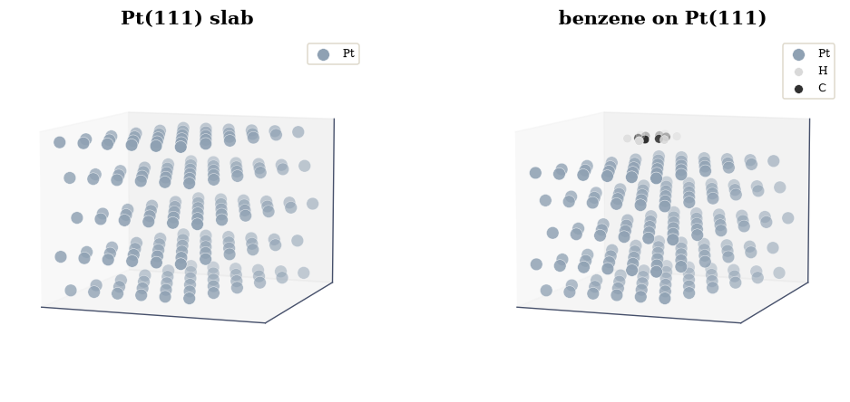
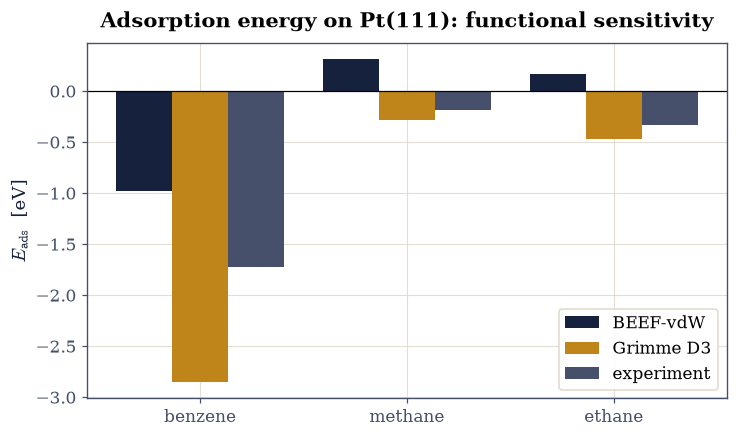

5.2 Hydrocarbons on Platinum#
from ecp.style import header, use_style
use_style()
header(
volume="Volume V — Crystals and Surfaces",
number="5.2",
title="Hydrocarbons on Platinum",
blurb="How tightly a molecule sticks to a metal surface, and why the answer depends "
"so much on the density functional: benzene, methane, and ethane on Pt(111), where "
"the van der Waals attraction that binds them is exactly what plain functionals "
"miss.",
difficulty="intermediate",
estimate="75–100 min",
source="FS 2023 · Lecture 8 (adsorption and dispersion)",
)
Notebook overview#
Platinum is the workhorse of catalysis, and catalysis begins with adsorption: a molecule must stick to the surface before it can react. How strongly it sticks, the adsorption energy, is the single most important number, and for hydrocarbons on a metal it is dominated by van der Waals (dispersion) attraction, the weak, long-range force that ordinary density functionals describe poorly. This exercise makes that failure concrete.
We take the course’s optimised structures of benzene, methane, and ethane on a Pt(111) slab, and its committed total energies, and compute the adsorption energy \(E_{\rm ads}=E_{\rm mol+slab}-E_{\rm slab}-E_{\rm mol}\). We compare it across two dispersion-aware methods (the BEEF-vdW functional and the Grimme D3 correction) and against experiment, and find the central lesson of the exercise: the choice of functional moves the adsorption energy by more than an electron-volt, with one method underbinding to the point of not binding the alkanes at all, and the other overbinding.
Provenance. This notebook develops Lecture 8 of the course (adsorption energies and dispersion on Pt(111)), an exercise designed by the author (Raymond Amador). The slab and adsorption structures (
pt_slab.xyz,benzene_on_pt.xyz, …) and the total energies are the course’s own committed CP2K results (an anonymised course run); the comparison table reproduces the exercise’s. The full course credit is in the footer.
Reading a validation. Each task closes with a check against an independent fact: a real calculation’s adsorption energy against the measured one, the known ordering of binding strengths, the size of the dispersion effect. A ✗ flags a mismatch; a ✓ is strong evidence, not proof.
Scope. Energies are the committed density-functional totals (Hartree, converted to eV); we analyse them rather than recompute the slab calculations, which are large and beyond a notebook. For dispersion see Grimme’s D3 [GAEK10] and the BEEF-vdW functional [WLMogelhoj+12].
Theory in brief#
Adsorption energy#
The adsorption energy is the energy released when an isolated molecule binds to a clean surface,
negative for a bound state. Each of the three terms is a separate total-energy calculation; the adsorption energy is a small difference of three large numbers, so it demands consistency and care.
Physisorption and the van der Waals problem#
Saturated hydrocarbons have no dangling bonds, so they do not form strong chemical bonds to platinum; they physisorb, held by van der Waals attraction. This force comes from correlated electron fluctuations, which a local or semi-local functional (LDA, PBE) simply does not contain, so plain functionals badly underbind physisorbed molecules. Two fixes appear here: the Grimme D3 correction adds an empirical \(-C_6/r^6\) term atom-by-atom, and the BEEF-vdW functional builds a non-local correlation term into the functional itself. They do not agree, and neither matches experiment exactly: adsorption energies remain a hard test of electronic-structure methods.
Setup#
import os
import numpy as np
import matplotlib.pyplot as plt
from ecp import validate
INK, AMBER, SOFT = "#16213e", "#c0851a", "#46506b"
HARTREE_EV = 27.211386
CPK = {"H": "#d9d9d9", "C": "#303030", "O": "#c0392b", "Pt": "#8fa1b3"}
def data_file(name):
"""Locate a shipped data file, from the repo root (CI) or the notebook dir (Colab).
Parameters
----------
name : str
File name (or relative path) under a ``data`` directory.
Returns
-------
str
The first existing path found.
Raises
------
FileNotFoundError
If the file is not found under any candidate base.
"""
for base in ("data", os.path.join("notebooks", "05-crystals-surfaces", "data")):
path = os.path.join(base, name)
if os.path.exists(path):
return path
raise FileNotFoundError(name)
def read_xyz(name):
"""Read an .xyz file.
Parameters
----------
name : str
File name (coordinates in Å).
Returns
-------
tuple
``(elements, coords)``: a list of element symbols and an (N, 3)
coordinate array in Å.
"""
lines = open(data_file(name)).read().splitlines()
n = int(lines[0].split()[0])
els = [ln.split()[0] for ln in lines[2:2 + n]]
xyz = np.array([[float(v) for v in ln.split()[1:4]] for ln in lines[2:2 + n]])
return els, xyz
Exercise 1 — The adsorption system#
The course built the adsorption geometry with ASE: a five-layer Pt(111) slab, 180 atoms, with the molecule placed above it and the whole thing relaxed. We render the committed benzene-on-Pt(111) structure, the slab a metallic raft and the flat benzene ring lying parallel just above it, the orientation that maximises van der Waals contact.
Part a) Load and render the Pt slab and benzene-on-Pt structures. Part b) Confirm the molecule sits in a vacuum gap above the slab (a surface, not a bulk calculation).
findfont: Failed to find font weight 600, now using 700.

Fig. 40 The committed adsorption system: a five-layer Pt(111) slab (silver) with a benzene molecule (carbon grey, hydrogen white) lying flat above the top layer. The molecule binds through van der Waals contact with the metal; the slab is repeated periodically in the plane, with vacuum above and below.#
benzene sits 2.25 Å above the top Pt layer (180 Pt + 12 molecule atoms)
Validation 1 — a molecule above a surface#
This must be a surface calculation: the molecule sits in the vacuum a couple of ångström above the topmost platinum layer, not buried in it.
✓ benzene sits in the vacuum gap above the Pt surface [molecule-to-surface height = 2.25 Å]
True
Exercise 2 — The adsorption energy of benzene#
The adsorption energy is the difference of three committed total-energy calculations Eq. 33: the bare slab, the isolated molecule, and the combined system. Below are the course’s committed totals (Hartree) for benzene on Pt(111). Their difference, converted to eV, is the adsorption energy, and for benzene on Pt it should land near the experimental value of about \(-1.7\,\)eV: benzene binds strongly, its whole \(\pi\)-face in van der Waals contact with the metal.
Part a) Compute \(E_{\rm ads}\) from the three totals. Part b) Confirm it matches the measured benzene adsorption energy.
E_ads(benzene) = (-21748.964 − -38.177 − -21710.724) Ha × 27.21
= -1.70 eV (experiment -1.72 eV)
Validation 2 — benzene binds at the measured strength#
The adsorption energy from the real totals must be bound (negative) and close to the experimental \(-1.7\,\)eV.
✓ the computed benzene adsorption energy matches experiment [got -1.70172 vs expected -1.72 (rtol=1e-06)]
True
Exercise 3 — Functional sensitivity (Assignment 6)#
Now the heart of the exercise. The course computed the adsorption energy of all three hydrocarbons with two dispersion-aware methods, the BEEF-vdW functional and the Grimme D3 correction, and compared them to experiment. The result is sobering: the two methods straddle the measured values, BEEF-vdW underbinding so badly that it leaves methane and ethane unbound (positive adsorption energy), and Grimme D3 overbinding every molecule. The lesson is that for physisorption the dispersion treatment, not just the functional, decides the answer.
Part a) Plot the adsorption energies of the three hydrocarbons for both methods against experiment. Part b) Confirm dispersion is decisive: benzene binds most strongly throughout, and the two methods bracket experiment.

Fig. 41 Adsorption energies of benzene, methane, and ethane on Pt(111) from the course’s committed results: the BEEF-vdW functional (navy) and the Grimme D3 correction (amber) against experiment (grey). Benzene binds far more strongly than the alkanes in every method. BEEF-vdW underbinds so severely that methane and ethane come out unbound (positive); Grimme D3 overbinds. The spread, well over an electron-volt for benzene, is the functional sensitivity the exercise is named for.#
Validation 3 — dispersion is decisive, and benzene binds most#
Two robust facts must hold: benzene is the most strongly bound species in every method (its large \(\pi\)-face), and the two dispersion treatments bracket experiment for benzene (BEEF-vdW above, Grimme D3 below), the signature of the functional sensitivity.
✓ benzene binds most strongly, and the two methods bracket experiment [benzene: BEEF-vdW -0.975, exp -1.72, D3 -2.852 eV]
True
Notebook summary#
We computed the adsorption energies of benzene, methane, and ethane on Pt(111) from the course’s committed total energies. Benzene’s \(-1.70\,\)eV from a real calculation matched the measured value, and comparing the dispersion-aware methods exposed the exercise’s point: the BEEF-vdW functional underbinds so badly it leaves the alkanes unbound, while the Grimme-D3 correction overbinds, the two bracketing experiment. For physisorbed hydrocarbons it is the van der Waals treatment, not just the functional, that decides the answer.
Outlook#
The deformation energy. Splitting \(E_{\rm ads}\) into the cost of distorting the molecule and slab into their adsorbed shapes plus the pure interaction separates geometry from binding.
Site dependence. Repeating the calculation with the molecule over a top, bridge, or hollow site maps the corrugation of the surface potential.
Coverage. Larger or smaller surface cells change the adsorbate-adsorbate spacing, giving the adsorption energy as a function of coverage.
Beyond pairwise dispersion. Many-body dispersion (MBD) and the RPA go past the pairwise \(-C_6/r^6\) picture and tend to improve metal-surface adsorption.
References#
Stefan Grimme, Jens Antony, Stephan Ehrlich, and Helge Krieg. A consistent and accurate ab initio parametrization of density functional dispersion correction (DFT-D) for the 94 elements H-Pu. The Journal of Chemical Physics, 132(15):154104, 2010. doi:10.1063/1.3382344.
Jess Wellendorff, Keld T. Lundgaard, Andreas Møgelhøj, and others. Density functionals for surface science: exchange-correlation model development with Bayesian error estimation. Physical Review B, 85(23):235149, 2012. doi:10.1103/PhysRevB.85.235149.
from ecp.style import footer
footer()